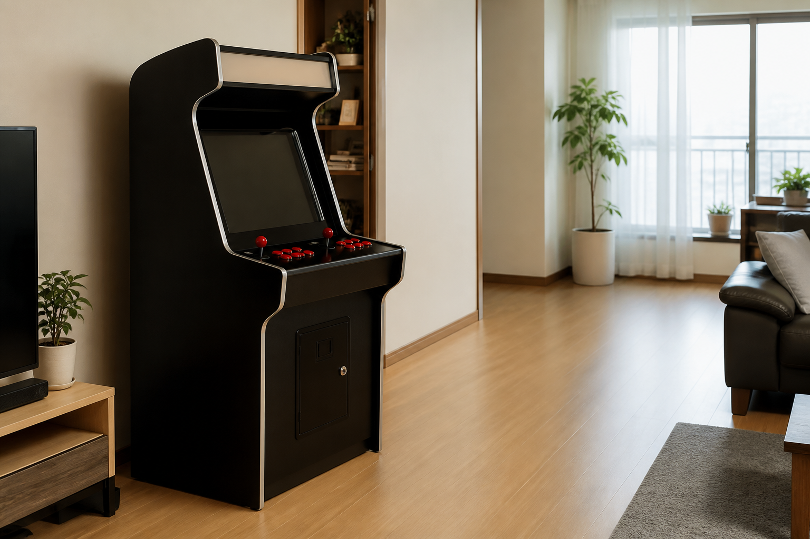
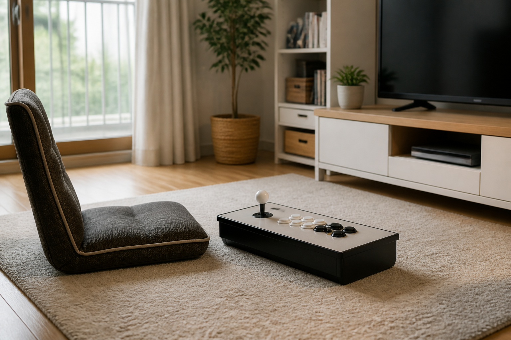
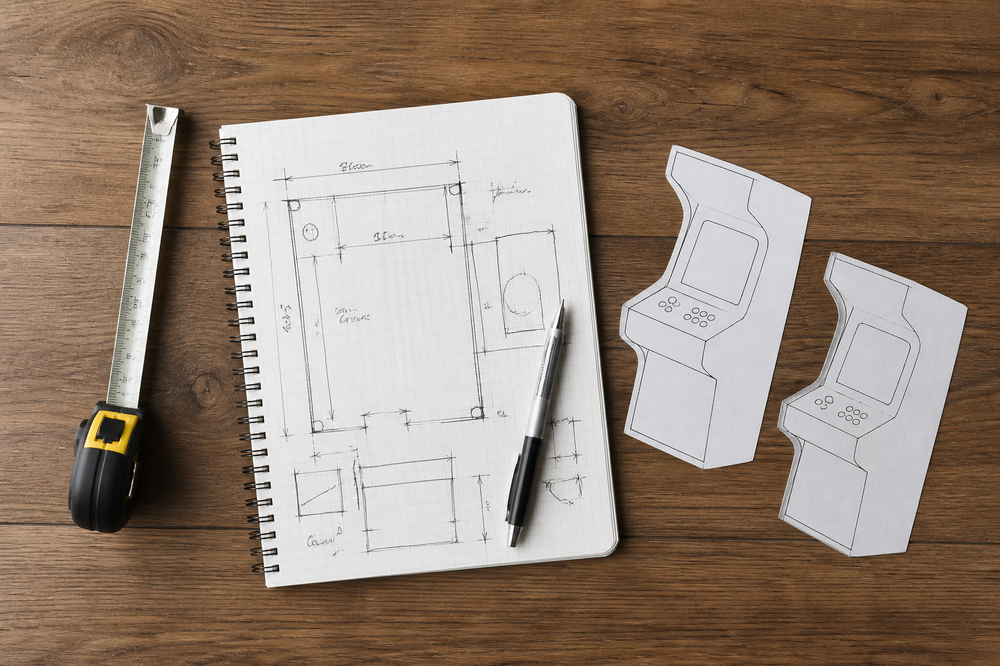

스탠드형과 좌식형 오락기는 주로 즐기는 자세와 설치 공간이 다릅니다. 서서 조작할 자리가 편한지, 바닥에 앉아 즐길 시간이 많은지를 먼저 생각하면 제품 형태를 비교하기 쉬워집니다.

서서 즐길 자리부터 생각하세요
스탠드형은 기기 앞에 서서 조작하는 장면을 먼저 떠올려 보는 편이 좋습니다. 기기 자체의 자리만 재기보다 앞쪽에 설 위치, 옆을 지나는 사람의 동선, 화면을 볼 거리를 함께 확인하세요. 노리박스 제품 목록에는 ‘노리박스 신형HX 32+ 강화유리 아크릴튜닝 스탠드형 오락실게임기’처럼 스탠드형을 이름에 밝힌 제품이 있습니다.
스탠드형은 기기 앞에서 편하게 설 수 있는 공간까지 함께 확인해야 합니다.

앉는 자세와 바닥 공간을 함께 보세요
좌식형은 앉는 위치와 조작부까지의 거리가 내 자세에 맞는지 살펴보는 것이 좋습니다. 바닥 의자나 방석을 쓰는 집이라면 앉은 뒤 다리와 팔을 둘 여유도 확인해 보세요. 노리박스 제품 목록에는 ‘노리박스 신형HX 32+ 좌식형 강화유리 화이트 오락실게임기’처럼 좌식형을 이름에 밝힌 제품도 있어, 현재 판매 페이지에서 형태와 안내를 비교할 수 있습니다.
좌식형은 앉을 자리와 조작할 자세를 함께 정할 때 비교하기 쉽습니다.
함께할 사람의 사용 장면을 적어 보세요
혼자 짧게 즐길지, 가족이나 손님과 번갈아 할지에 따라 편한 높이와 주변 공간은 달라질 수 있습니다. 노리박스는 제품을 준비할 때 직접 게임을 실행하고 조이스틱과 버튼을 만져보며 사용 과정의 불편을 확인합니다. 실제 구매 전에는 주로 누가 어떤 자세로 사용할지 적어 보고, 제품별 안내와 문의 답변을 바탕으로 판단하세요.
제품 형태는 함께 사용할 사람의 자세까지 고려해 선택하는 편이 좋습니다.

제품명보다 집에서 쓸 장면을 먼저 정하세요
스탠드형과 좌식형 중 하나가 모든 집에 더 맞는다고 단정할 수는 없습니다. 설치할 방의 동선, 평소의 놀이 시간, 화면을 보는 위치를 정한 뒤 현재 상품 페이지에서 크기와 구성 안내를 확인하세요. 설치 준비는 집에서 오락실 게임기를 시작하는 방법, 형태를 고르는 기준은 집에서 오락실 느낌을 살리는 기준에서 이어서 볼 수 있습니다.
집에서 실제로 즐길 장면을 먼저 정하면 제품 형태를 비교하기 쉬워집니다.
현재 스탠드형과 좌식형을 포함한 노리박스 제품은 제품자세히보기에서 확인하세요.